Set and Rep Schemes
scheme_generic(
reps,
adjustment,
vertical_planning,
vertical_planning_control = list(),
progression_table,
progression_table_control = list()
)
scheme_wave(
reps = c(10, 8, 6),
adjustment = -rev((seq_along(reps) - 1) * 5)/100,
vertical_planning = vertical_constant,
vertical_planning_control = list(),
progression_table = progression_perc_drop,
progression_table_control = list(volume = "normal")
)
scheme_plateau(
reps = c(5, 5, 5),
vertical_planning = vertical_constant,
vertical_planning_control = list(),
progression_table = progression_perc_drop,
progression_table_control = list(volume = "normal")
)
scheme_step(
reps = c(5, 5, 5),
adjustment = -rev((seq_along(reps) - 1) * 10)/100,
vertical_planning = vertical_constant,
vertical_planning_control = list(),
progression_table = progression_perc_drop,
progression_table_control = list(volume = "intensive")
)
scheme_step_reverse(
reps = c(5, 5, 5),
adjustment = -((seq_along(reps) - 1) * 10)/100,
vertical_planning = vertical_constant,
vertical_planning_control = list(),
progression_table = progression_perc_drop,
progression_table_control = list(volume = "intensive")
)
scheme_wave_descending(
reps = c(6, 8, 10),
adjustment = -rev((seq_along(reps) - 1) * 5)/100,
vertical_planning = vertical_constant,
vertical_planning_control = list(),
progression_table = progression_perc_drop,
progression_table_control = list(volume = "normal")
)
scheme_light_heavy(
reps = c(10, 5, 10, 5),
adjustment = c(-0.1, 0)[(seq_along(reps)%%2) + 1],
vertical_planning = vertical_constant,
vertical_planning_control = list(),
progression_table = progression_perc_drop,
progression_table_control = list(volume = "normal")
)
scheme_pyramid(
reps = c(12, 10, 8, 10, 12),
adjustment = 0,
vertical_planning = vertical_constant,
vertical_planning_control = list(),
progression_table = progression_perc_drop,
progression_table_control = list(volume = "extensive")
)
scheme_pyramid_reverse(
reps = c(8, 10, 12, 10, 8),
adjustment = 0,
vertical_planning = vertical_constant,
vertical_planning_control = list(),
progression_table = progression_perc_drop,
progression_table_control = list(volume = "extensive")
)
scheme_rep_acc(
reps = c(10, 10, 10),
adjustment = 0,
vertical_planning_control = list(step = rep(0, 4)),
progression_table = progression_perc_drop,
progression_table_control = list(volume = "normal")
)
scheme_ladder(
reps = c(3, 5, 10),
adjustment = 0,
vertical_planning = vertical_constant,
vertical_planning_control = list(),
progression_table = progression_perc_drop,
progression_table_control = list(volume = "normal")
)Numeric vector indicating reps prescription
Numeric vector indicating adjustments. Forwarded to progression_table.
Vertical planning function. Default is vertical_constant
Arguments forwarded to the vertical_planning function
Progression table function. Default is progression_perc_drop
Arguments forwarded to the progression_table function
Data frame with the following columns: reps, index, step,
adjustment, and perc_1RM.
scheme_generic(): Generic set and rep scheme.
scheme_generic is called in all other set and rep schemes - only the default parameters
differ to make easier and quicker schemes writing and groupings
scheme_wave(): Wave set and rep scheme
scheme_plateau(): Plateau set and rep scheme
scheme_step(): Step set and rep scheme
scheme_step_reverse(): Reverse Step set and rep scheme
scheme_wave_descending(): Descending Wave set and rep scheme
scheme_light_heavy(): Light-Heavy set and rep scheme
Please note that the adjustment column in the output
will be wrong, hence set to NA
scheme_pyramid(): Pyramid set and rep scheme
scheme_pyramid_reverse(): Reverse Pyramid set and rep scheme
scheme_rep_acc(): Rep Accumulation set and rep scheme
scheme_ladder(): Ladder set and rep scheme
Please note that the adjustment column in the output
will be wrong, hence set to NA
scheme_generic(
reps = c(8, 6, 4, 8, 6, 4),
# Adjusting using lower %1RM (RIR Increment method used)
adjustment = c(4, 2, 0, 6, 4, 2),
vertical_planning = vertical_linear,
vertical_planning_control = list(reps_change = c(0, -2, -4)),
progression_table = progression_RIR_increment,
progression_table_control = list(volume = "extensive")
)
#> index step set reps adjustment perc_1RM
#> 1 1 -2 1 8 4 0.6024294
#> 2 1 -2 2 6 2 0.6709526
#> 3 1 -2 3 4 0 0.7570648
#> 4 1 -2 4 8 6 0.5791912
#> 5 1 -2 5 6 4 0.6422533
#> 6 1 -2 6 4 2 0.7207254
#> 7 2 -1 1 8 4 0.6228766
#> 8 2 -1 2 6 2 0.6934900
#> 9 2 -1 3 4 0 0.7821610
#> 10 2 -1 4 8 6 0.5980666
#> 11 2 -1 5 6 4 0.6628742
#> 12 2 -1 6 4 2 0.7434341
#> 13 3 0 1 8 4 0.6447604
#> 14 3 0 2 6 2 0.7175941
#> 15 3 0 3 4 0 0.8089782
#> 16 3 0 4 8 6 0.6182137
#> 17 3 0 5 6 4 0.6848633
#> 18 3 0 6 4 2 0.7676204
# Wave set and rep schemes
# --------------------------
scheme_wave()
#> index step set reps adjustment perc_1RM
#> 1 1 -3 1 10 -0.10 0.4683694
#> 2 1 -3 2 8 -0.05 0.5760036
#> 3 1 -3 3 6 0.00 0.6880177
#> 4 2 -2 1 10 -0.10 0.5138239
#> 5 2 -2 2 8 -0.05 0.6169127
#> 6 2 -2 3 6 0.00 0.7243813
#> 7 3 -1 1 10 -0.10 0.5592785
#> 8 3 -1 2 8 -0.05 0.6578217
#> 9 3 -1 3 6 0.00 0.7607450
#> 10 4 0 1 10 -0.10 0.6047330
#> 11 4 0 2 8 -0.05 0.6987308
#> 12 4 0 3 6 0.00 0.7971086
scheme_wave(
reps = c(8, 6, 4, 8, 6, 4),
# Second wave with higher intensity
adjustment = c(-0.25, -0.15, 0.05, -0.2, -0.1, 0),
vertical_planning = vertical_block,
progression_table = progression_perc_drop,
progression_table_control = list(type = "ballistic")
)
#> index step set reps adjustment perc_1RM
#> 1 1 -2 1 8 -0.25 0.2399008
#> 2 1 -2 2 6 -0.15 0.4269899
#> 3 1 -2 3 4 0.05 0.7271399
#> 4 1 -2 4 8 -0.20 0.2899008
#> 5 1 -2 5 6 -0.10 0.4769899
#> 6 1 -2 6 4 0.00 0.6771399
#> 7 2 -1 1 8 -0.25 0.2999008
#> 8 2 -1 2 6 -0.15 0.4769899
#> 9 2 -1 3 4 0.05 0.7671399
#> 10 2 -1 4 8 -0.20 0.3499008
#> 11 2 -1 5 6 -0.10 0.5269899
#> 12 2 -1 6 4 0.00 0.7171399
#> 13 3 0 1 8 -0.25 0.3599008
#> 14 3 0 2 6 -0.15 0.5269899
#> 15 3 0 3 4 0.05 0.8071399
#> 16 3 0 4 8 -0.20 0.4099008
#> 17 3 0 5 6 -0.10 0.5769899
#> 18 3 0 6 4 0.00 0.7571399
#> 19 4 -3 1 8 -0.25 0.1799008
#> 20 4 -3 2 6 -0.15 0.3769899
#> 21 4 -3 3 4 0.05 0.6871399
#> 22 4 -3 4 8 -0.20 0.2299008
#> 23 4 -3 5 6 -0.10 0.4269899
#> 24 4 -3 6 4 0.00 0.6371399
# Adjusted second wave
# and using 3 steps progression
scheme_wave(
reps = c(8, 6, 4, 8, 6, 4),
# Adjusting using lower %1RM (progression_perc_drop method used)
adjustment = c(0, 0, 0, -0.1, -0.1, -0.1),
vertical_planning = vertical_linear,
vertical_planning_control = list(reps_change = c(0, -2, -4)),
progression_table = progression_perc_drop,
progression_table_control = list(volume = "extensive")
)
#> index step set reps adjustment perc_1RM
#> 1 1 -2 1 8 0.0 0.6260036
#> 2 1 -2 2 6 0.0 0.6880177
#> 3 1 -2 3 4 0.0 0.7551840
#> 4 1 -2 4 8 -0.1 0.5260036
#> 5 1 -2 5 6 -0.1 0.5880177
#> 6 1 -2 6 4 -0.1 0.6551840
#> 7 2 -1 1 8 0.0 0.6669127
#> 8 2 -1 2 6 0.0 0.7243813
#> 9 2 -1 3 4 0.0 0.7870022
#> 10 2 -1 4 8 -0.1 0.5669127
#> 11 2 -1 5 6 -0.1 0.6243813
#> 12 2 -1 6 4 -0.1 0.6870022
#> 13 3 0 1 8 0.0 0.7078217
#> 14 3 0 2 6 0.0 0.7607450
#> 15 3 0 3 4 0.0 0.8188204
#> 16 3 0 4 8 -0.1 0.6078217
#> 17 3 0 5 6 -0.1 0.6607450
#> 18 3 0 6 4 -0.1 0.7188204
# Adjusted using RIR inc
# This time we adjust first wave as well, first two sets easier
scheme <- scheme_wave(
reps = c(8, 6, 4, 8, 6, 4),
# Adjusting using lower %1RM (RIR Increment method used)
adjustment = c(4, 2, 0, 6, 4, 2),
vertical_planning = vertical_linear,
vertical_planning_control = list(reps_change = c(0, -2, -4)),
progression_table = progression_RIR_increment,
progression_table_control = list(volume = "extensive")
)
plot(scheme)
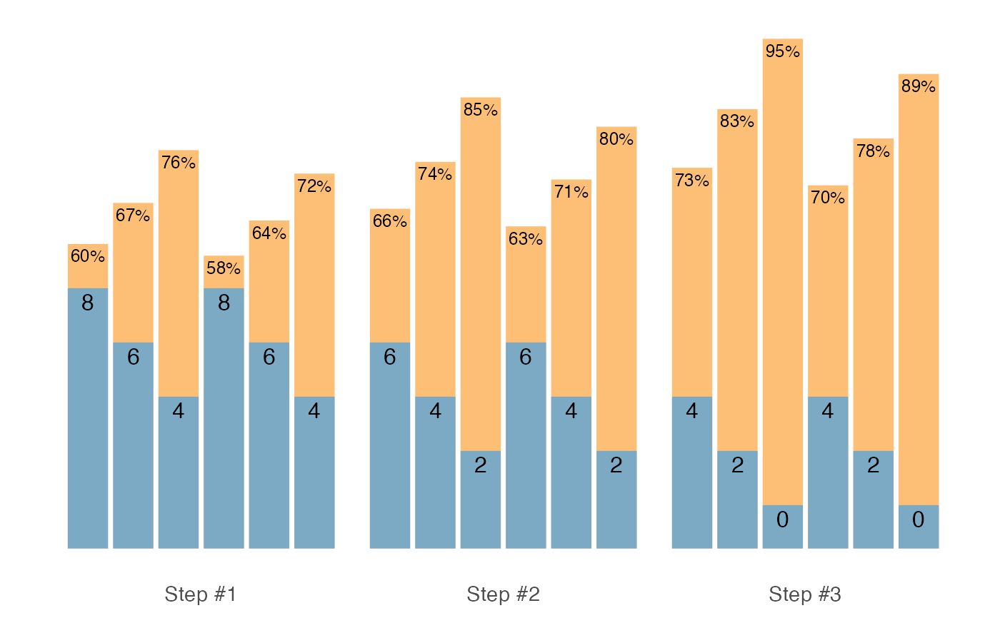
# Plateau set and rep schemes
# --------------------------
scheme_plateau()
#> index step set reps adjustment perc_1RM
#> 1 1 -3 1 5 0 0.7209017
#> 2 1 -3 2 5 0 0.7209017
#> 3 1 -3 3 5 0 0.7209017
#> 4 2 -2 1 5 0 0.7549926
#> 5 2 -2 2 5 0 0.7549926
#> 6 2 -2 3 5 0 0.7549926
#> 7 3 -1 1 5 0 0.7890835
#> 8 3 -1 2 5 0 0.7890835
#> 9 3 -1 3 5 0 0.7890835
#> 10 4 0 1 5 0 0.8231744
#> 11 4 0 2 5 0 0.8231744
#> 12 4 0 3 5 0 0.8231744
scheme <- scheme_plateau(
reps = c(3, 3, 3),
progression_table_control = list(type = "ballistic")
)
plot(scheme)
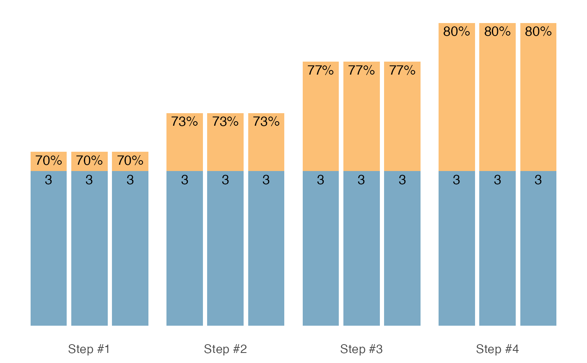
# Step set and rep schemes
# --------------------------
scheme_step()
#> index step set reps adjustment perc_1RM
#> 1 1 -3 1 5 -0.2 0.5549926
#> 2 1 -3 2 5 -0.1 0.6549926
#> 3 1 -3 3 5 0.0 0.7549926
#> 4 2 -2 1 5 -0.2 0.5890835
#> 5 2 -2 2 5 -0.1 0.6890835
#> 6 2 -2 3 5 0.0 0.7890835
#> 7 3 -1 1 5 -0.2 0.6231744
#> 8 3 -1 2 5 -0.1 0.7231744
#> 9 3 -1 3 5 0.0 0.8231744
#> 10 4 0 1 5 -0.2 0.6572653
#> 11 4 0 2 5 -0.1 0.7572653
#> 12 4 0 3 5 0.0 0.8572653
scheme <- scheme_step(
reps = c(2, 2, 2),
adjustment = c(-0.1, -0.05, 0),
vertical_planning = vertical_linear_reverse,
progression_table_control = list(type = "ballistic")
)
plot(scheme)
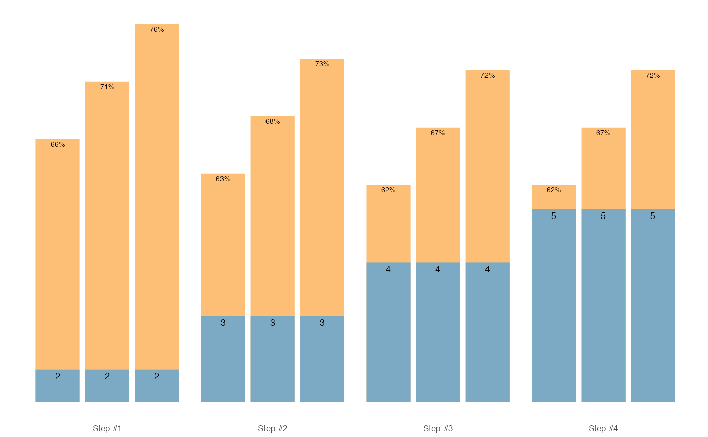
# Reverse Step set and rep schemes
#- -------------------------
scheme <- scheme_step_reverse()
plot(scheme)
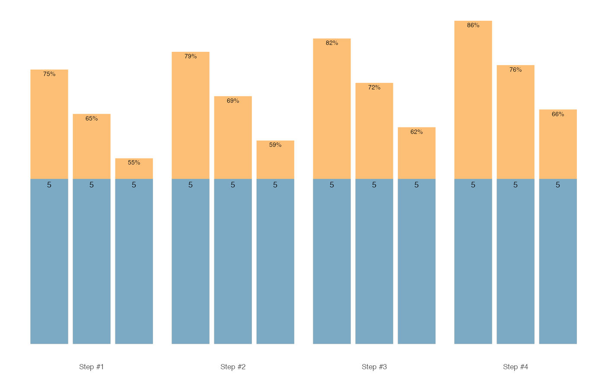
# Descending Wave set and rep schemes
# --------------------------
scheme <- scheme_wave_descending()
plot(scheme)
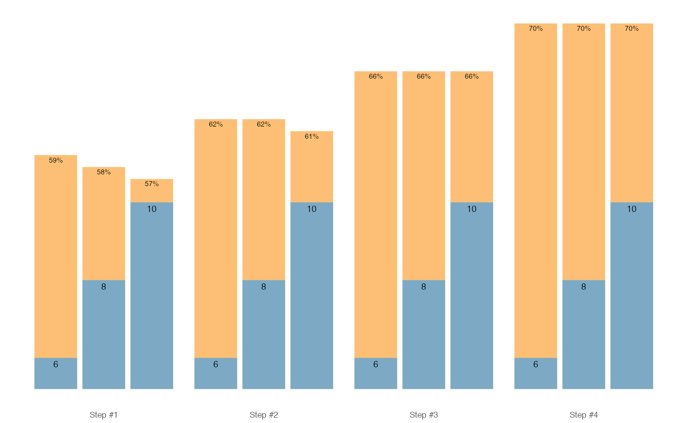
# Light-Heavy set and rep schemes
# --------------------------
scheme <- scheme_light_heavy()
plot(scheme)
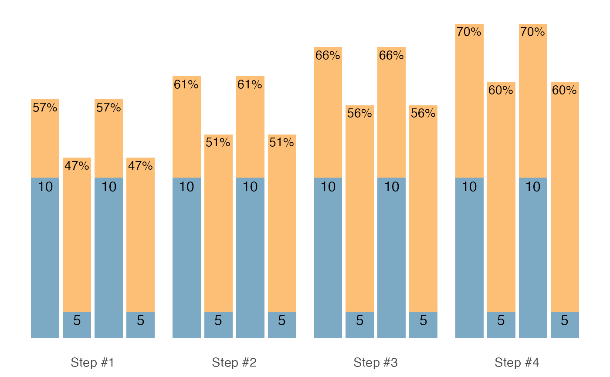
# Pyramid set and rep schemes
# --------------------------
scheme <- scheme_pyramid()
plot(scheme)
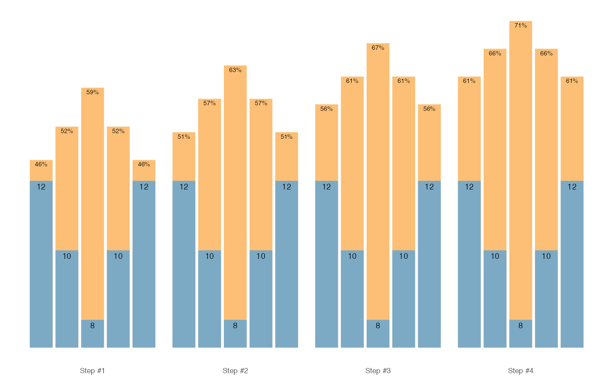
# Reverse Pyramid set and rep schemes
# --------------------------
scheme <- scheme_pyramid_reverse()
plot(scheme)
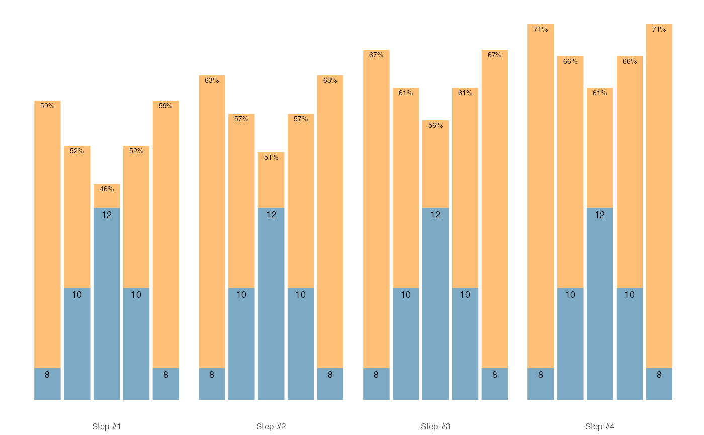
# Rep Accumulation set and rep schemes
# --------------------------
scheme_rep_acc()
#> index step set reps adjustment perc_1RM
#> 1 1 0 1 7 0 0.704733
#> 2 1 0 2 7 0 0.704733
#> 3 1 0 3 7 0 0.704733
#> 4 2 0 1 8 0 0.704733
#> 5 2 0 2 8 0 0.704733
#> 6 2 0 3 8 0 0.704733
#> 7 3 0 1 9 0 0.704733
#> 8 3 0 2 9 0 0.704733
#> 9 3 0 3 9 0 0.704733
#> 10 4 0 1 10 0 0.704733
#> 11 4 0 2 10 0 0.704733
#> 12 4 0 3 10 0 0.704733
# Generate Wave scheme with rep accumulation vertical progression
# This functions doesn't allow you to use different vertical planning
# options
scheme <- scheme_rep_acc(reps = c(10, 8, 6), adjustment = c(-0.1, -0.05, 0))
plot(scheme)
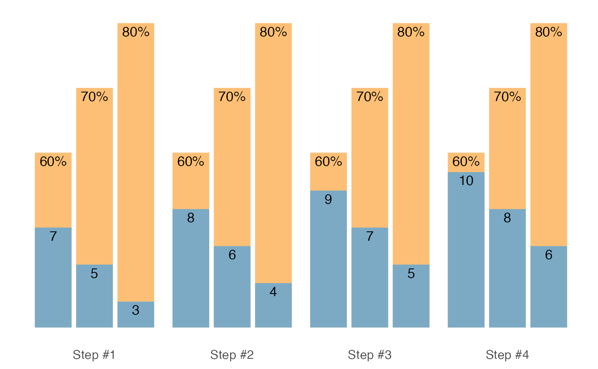
# Other options is to use `.vertical_rep_accumulation.post()` and
# apply it after
# The default vertical progression is `vertical_const()`
scheme <- scheme_wave(reps = c(10, 8, 6), adjustment = c(-0.1, -0.05, 0))
.vertical_rep_accumulation.post(scheme)
#> index step set reps adjustment perc_1RM
#> 1 1 0 1 7 -0.10 0.6047330
#> 2 1 0 2 5 -0.05 0.6987308
#> 3 1 0 3 3 0.00 0.7971086
#> 4 2 0 1 8 -0.10 0.6047330
#> 5 2 0 2 6 -0.05 0.6987308
#> 6 2 0 3 4 0.00 0.7971086
#> 7 3 0 1 9 -0.10 0.6047330
#> 8 3 0 2 7 -0.05 0.6987308
#> 9 3 0 3 5 0.00 0.7971086
#> 10 4 0 1 10 -0.10 0.6047330
#> 11 4 0 2 8 -0.05 0.6987308
#> 12 4 0 3 6 0.00 0.7971086
# We can also create "undulating" rep decrements
.vertical_rep_accumulation.post(
scheme,
rep_decrement = c(-3, -1, -2, 0)
)
#> index step set reps adjustment perc_1RM
#> 1 1 0 1 7 -0.10 0.6047330
#> 2 1 0 2 5 -0.05 0.6987308
#> 3 1 0 3 3 0.00 0.7971086
#> 4 2 0 1 9 -0.10 0.6047330
#> 5 2 0 2 7 -0.05 0.6987308
#> 6 2 0 3 5 0.00 0.7971086
#> 7 3 0 1 8 -0.10 0.6047330
#> 8 3 0 2 6 -0.05 0.6987308
#> 9 3 0 3 4 0.00 0.7971086
#> 10 4 0 1 10 -0.10 0.6047330
#> 11 4 0 2 8 -0.05 0.6987308
#> 12 4 0 3 6 0.00 0.7971086
# `scheme_rep_acc` will not allow you to generate `scheme_ladder()`
# and `scheme_scheme_light_heavy()`
# You must use `.vertical_rep_accumulation.post()` to do so
scheme <- scheme_ladder()
scheme <- .vertical_rep_accumulation.post(scheme)
plot(scheme)
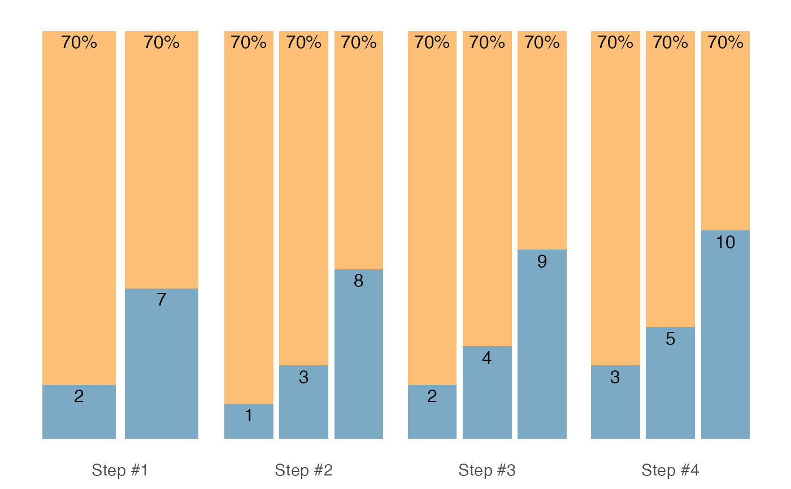
# Please note that reps < 1 are removed. If you do not want this,
# use `remove_reps = FALSE` parameter
scheme <- scheme_ladder()
scheme <- .vertical_rep_accumulation.post(scheme, remove_reps = FALSE)
plot(scheme)
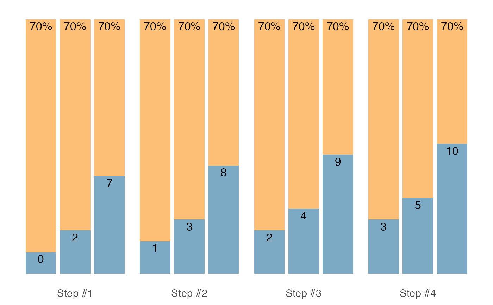
# Ladder set and rep schemes
# --------------------------
scheme <- scheme_ladder()
plot(scheme)
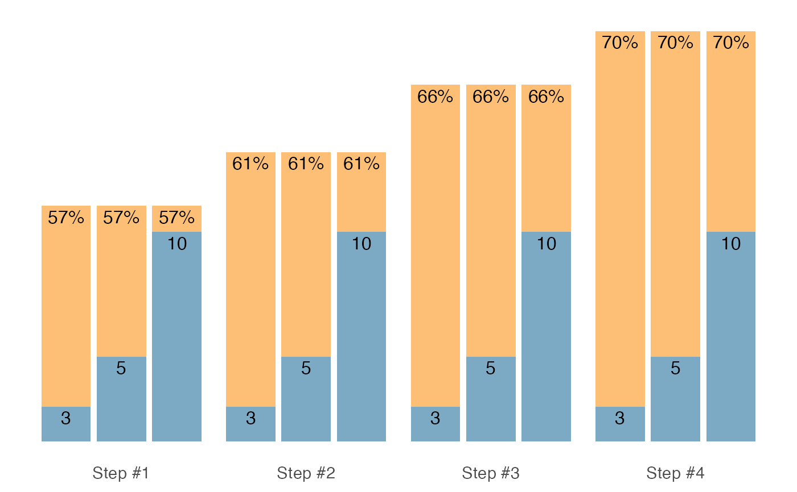